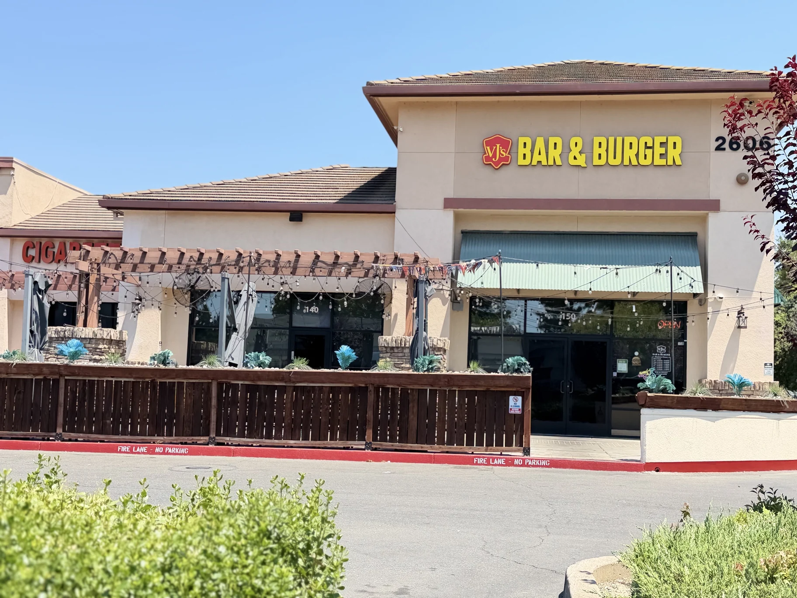

VJ’S BAR & BURGER · SACRAMENTO
Your Neighborhood Bar & Grill in Natomas

GATEWAY OAKS DRIVE · NATOMAS
Burgers, Wings & Live Sports in Sacramento
Welcome to VJ’s Bar & Burger on Gateway Oaks Drive—your local spot for juicy burgers, crispy wings, grilled favorites, cocktails and cold draft beer. Join us for a casual lunch, family dinner, happy hour or game day with friends.
Located near West El Camino Avenue, with convenient access from I-5 and I-80, we’re an easy stop for Sacramento locals, nearby office teams and travelers looking for a relaxed meal in Natomas.

MAKE YOURSELF AT HOME
ROOM FOR GOOD COMPANY.
Whether you’re stopping by for a casual meal or planning a celebration, talk to our team. We’ll help you plan your visit.
Find Us